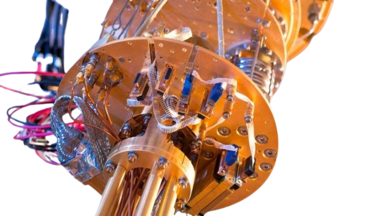
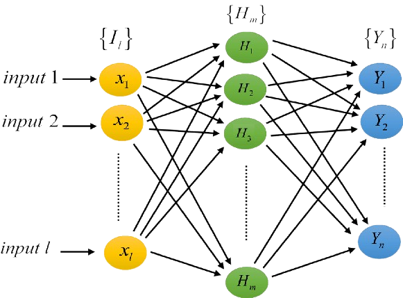
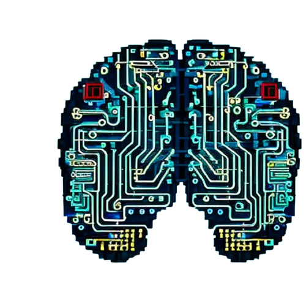
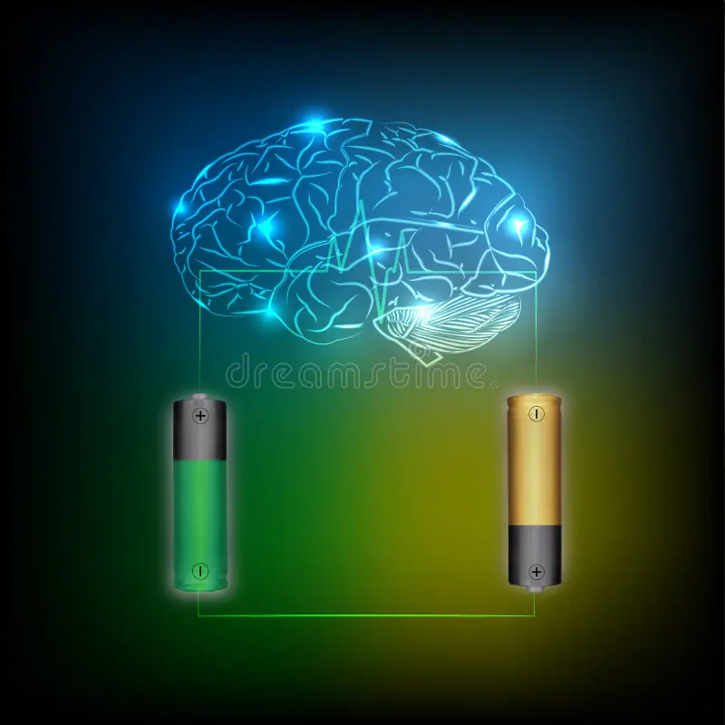

Quantum Neural Network Importance For Quatum Computing
Neurals (Nodes)These are the basic units in a Quantum Neuron Network, just like neurons in a biological brain or nodes in classical neural networks.
LayersSimilar to traditional neural networks, quantum neuron networks consist of multiple layers. Each layer contains several neurons that work together to process information.
Weights and BiasesWeights determine the importance of a specific input to a neuron. For example, if an input is more relevant to solving a problem, it will be assigned a higher weight.Biases are additional constants added to the input, helping the network to make better predictions and adjust its output.
Activation FunctionWhen a neuron is activated, it passes information to the next layer. If not activated, it remains silent.Activation functions add non-linearity, allowing the network to learn and model more complex relationships between inputs.
Forward PropagationThis is the process of moving data through the network, starting from the input layer and passing through all the layers until it reaches the output layer.
Types of Neural Networks in Quantum Computing
Neural Networks (FNN): Feedforward Neural Networks (FNN):The simplest type of neural network where the data flows only in one direction: forward, from the input layer to the output layer.No data or information loops back. FNNs are typically used for tasks like classification or regression.Convolutional Neural Networks (CNN):Primarily used for image or video processing tasks, CNNs apply filters to recognize patterns in data (e.g., edges, textures in images).In quantum CNNs, quantum gates can be used to apply these filters, allowing for faster and more efficient pattern recognition.
Neural Networks (RNN): Recurrent Neural Networks (RNN):Unlike FNNs, RNNs have connections that loop back, allowing the network to "remember" previous inputs. This makes them great for tasks involving sequential data, like time series prediction or natural language processing.Quantum RNNs can leverage quantum memory, potentially allowing for much more efficient learning on sequence data.
Generative Adversarial Networks (GANs): Generative Adversarial Networks (GANs):A unique type of neural network where two networks (a generator and a discriminator) compete with each other. The generator creates new data, while the discriminator evaluates its quality.Quantum GANs could generate and assess complex data, such as realistic images, faster than classical GANs due to the processing power of qubits
Quantum Hardware Limitations

Implementation of Algorithm

Cost and Infrastructure

Energy Consumption

Government and National Research Labs
Future Prospects of Quantum Neural Networks
Enhanced AI Capabilities: Faster, more efficient AI models, potentially leading to Artificial General Intelligence (AGI).
Drug Discovery and Healthcare: Personalized medicine and faster disease diagnostics with molecular simulations.
Quantum Finance: Optimizing portfolios, market predictions, and fraud detection with QNNs.
Cybersecurity Improvements: Developing quantum-resistant encryption and real-time threat detection.
Environmental Modeling: Better climate models for sustainability and improved renewable energy optimization.
Scientific Research: Discover new materials and simulate complex quantum systems.
Transportation and Logistics: Traffic optimization, supply chain improvements, and dynamic resource allocation.
Space Exploration: Enhanced space simulations and autonomous decision-making in space exploration.
Advanced Robotics: Safer autonomous vehicles and more precise robotics in automation.